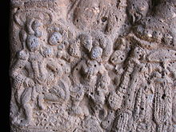

The history of tabla is unclear, and there are multiple theories regarding its origins. There are two groups of theories, one that traces its origins to Muslim and Mughal invaders of the Indian subcontinent, the other traces it to indigenous origins. One example of the latter theory is carvings in Bhaja Caves. However, clear pictorial evidence of the drum emerges only from about 1745, and the drum continued to develop in shape until the early 1800s. Various Hindu and Jain temples, such as the Eklingji in Udaipur, Rajasthan show stone carvings of a person playing tabla-like small pair of drums. Small drums were popular during the Yadava rule (1210 to 1247) in the south, at the time when Sangita Ratnakara was written by Sarangadeva. Madhava Kandali, 14th century Assamese poet and writer of Saptakanda Ramayana, lists several instruments in his version of "Ramayana", such as tabal, jhajhar, dotara, vina, rudra-vipanchi, etc. (meaning that these instruments existed since his time in 14th century or earlier).There is recent iconography of the tabla dating back to 1799.[32] This theory is now obsolete with iconography carvings found in Bhaje caves providing solid proof that the tabla was used in ancient India. There are Hindu temple carvings of double hand drums resembling the tabla that date back to 500 BCE.[33] The tabla was spread widely across ancient India. A Hoysaleshwara temple in Karnataka shows a carving of a woman playing a tabla in a dance performance
Bhaje caves providing solid proof that the tabla was used in ancient India. There are Hindu temple carvings of double hand drums resembling the tabla that date back to 500 BCE.[33] The tabla was spread widely across ancient India. A Hoysaleshwara temple in Karnataka shows a carving of a woman playing a tabla in a dance performance. According to classifications of musical instruments defined in the Natyashastra, Tabla is classified in the Avanadha Vadya category of rhythm instruments which are made by capping an empty vessel with a stretched skin.